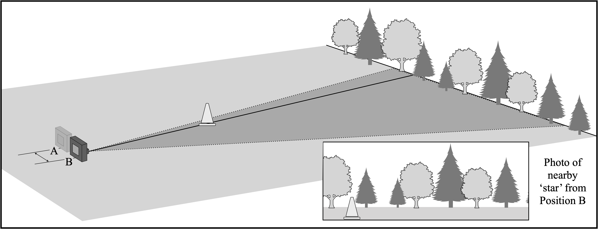
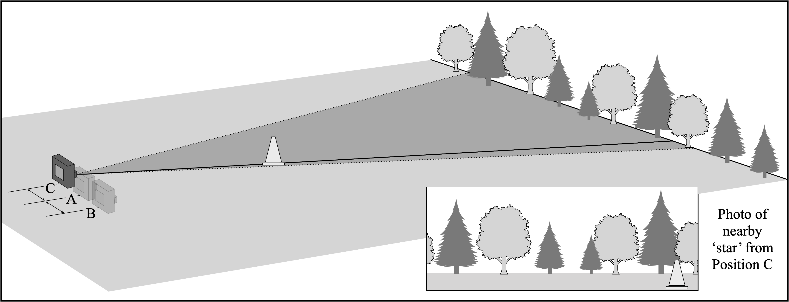

You should now head out to a large field, with trees in the distance (several hundred feet away). For the purpose of this exercise, those trees will play the role of our background stars. You want them so far away that they barely move when you walk back and forth. Take a photo of those distant trees making sure your camera is set to the same zoom value you used while determining your FOV. Note the location where you took the photo. Call it Position A.
Now your teacher will place a ‘star’ (a cone) a distance \(d\) (maybe 50 - 100 feet) in front of you. You will take photos of the cone from three different locations. As you change your position the background trees will appear to move. By carefully measuring “how much” they move we can measure the distance to the cone. Your teacher will use a tape measure to find the actual distance \(d\) from Position A to the cone. Once you’ve made your parallax measurements, you can compare your inferred distance to what was directly measured.
Standing at the same spot as the last photo (Position A), take a photo of the cone with the trees in the background.

Move to your right a distance \(r\) (no more than 5 meters). Notice how the trees behind the cone appear to have changed. Make note of your location and take another photo. Call this location Position B.

The distance moved from side-to-side is called the baseline. Record the baseline distance (in feet) \(b_R\) between Positions A and B here: \[b_R = B - A = \hspace{1.25cm}\]
Finally, move to the left of Position A to a new location. Call this Position C. Take a third photo of the cone. Again, the distant trees behind the cone should appear to have moved.

Record the baseline distance (in feet) \(b_L\) between Positions A and C here: \[b_L = A - C = \hspace{1.25cm}\]